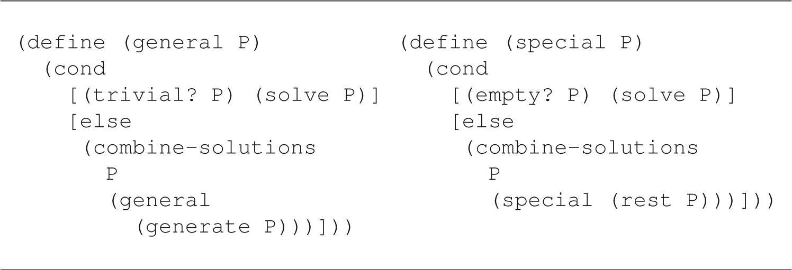

26.3 Structural versus Generative Recursion
The template for algorithms is so general that it includes structurally recursive functions. Consider the left side of figure 153. This template is specialized to deal with one trivial clause and one generative step. If we replace trivial? with empty? and generate with rest, we get a template for list-processing functions; see the right side of figure 153.

Figure 153: From generative to structural recursion
Exercise 437. Define solve and combine-solutions so that
• special computes the length of its input,
• special negates each number on the given list of numbers, and
• special uppercases the given list of strings.
What do you conclude from these exercises? 
Now you may wonder whether there is a real difference between structural recursive design and the one for generative recursion. Our answer is “it depends.” Of course, we could say that all functions using structural recursion are just special cases of generative recursion. This “everything is equal” attitude, however, is of no help if we wish to understand the process of designing functions. It confuses two kinds of design that require different forms of knowledge and that have different consequences. One relies on a systematic data analysis and not much more; the other requires a deep, often mathematical, insight into the problem-solving process itself. One leads programmers to naturally terminating functions; the other requires a termination argument. Conflating these two approaches is unhelpful.